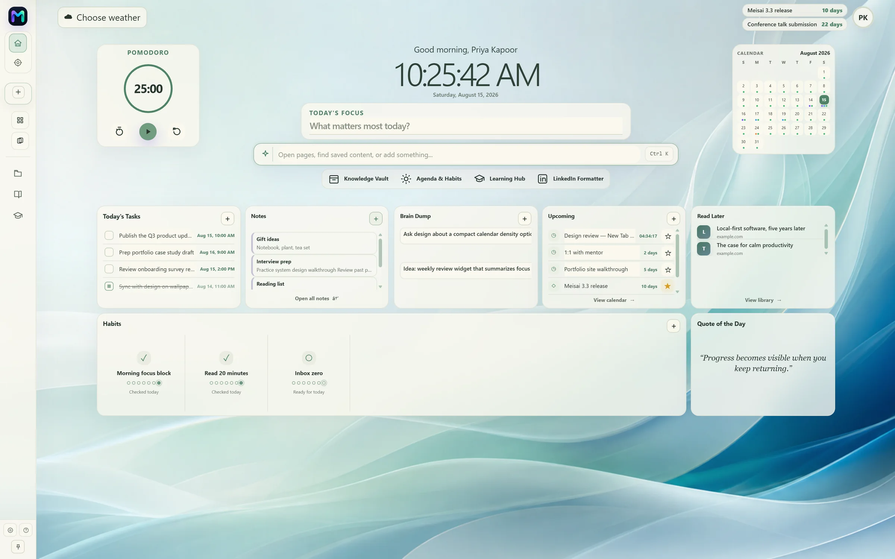
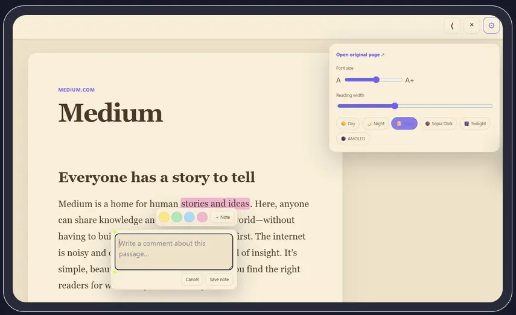
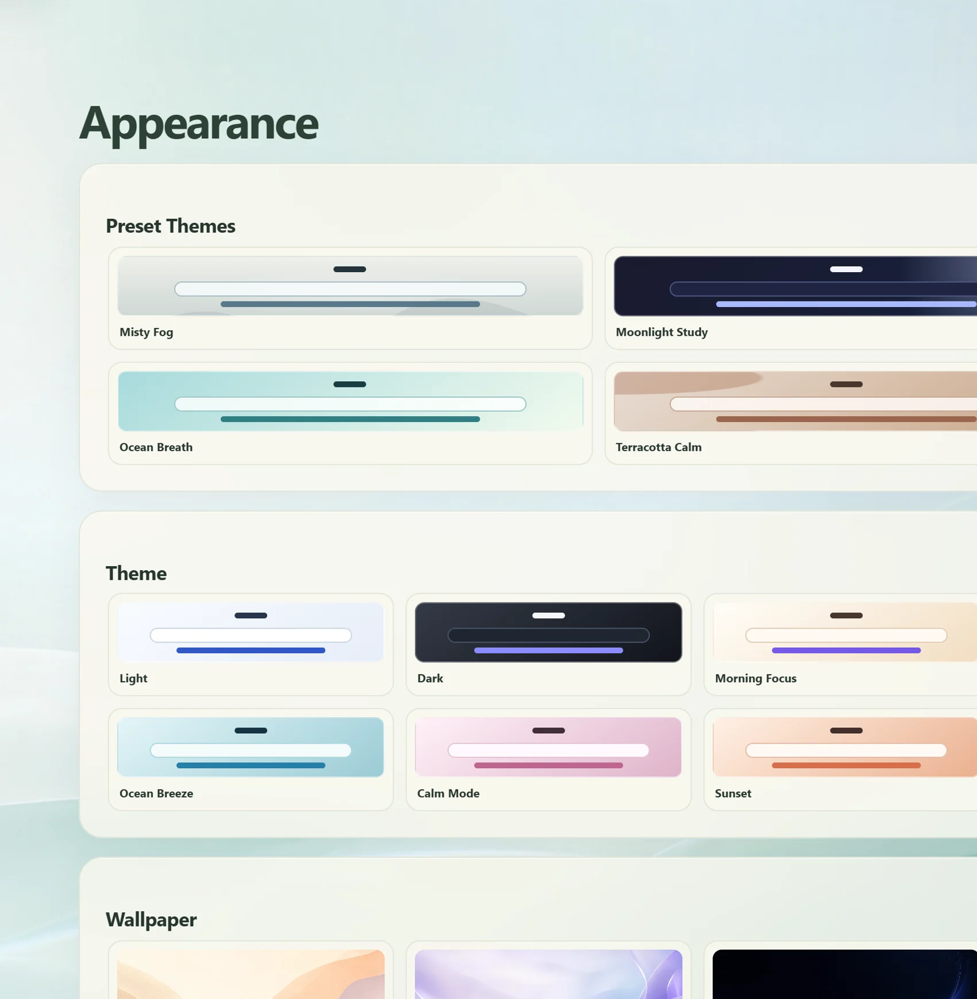

Plan and focus
- Today's Focus
- Tasks and Upcoming
- Calendar and countdowns
- Seven-day habits
- Pomodoro and Focus Tab
- Website blocking
- Notifications
Browser workspace
Meisai brings your tasks, notes, reading mode, learning hub, and career tools together, so you can work, learn, and stay organized without constantly switching between apps.

See it in action
01Open the workspace
Why Meisai exists
Your work, learning, ideas, reading, tasks, and career resources are scattered across different tools. Meisai brings them closer together by adding a personal workspace to the browser you already use, so everything you need throughout the day is right where you need it.
Web · Tabs · Bookmarks · History
Tasks · Notes · Knowledge · Reading · Focus · Career
Everything closer to where the work already happens.
How Meisai fits
Use your existing browser normally. Meisai doesn't change how you browse the web.
Save tasks, notes, pages, ideas, and knowledge while you work, right where you already are.
Bring those pieces into one customizable workspace you can shape around yourself.
A closer look at what's already built, grouped the way you'd actually reach for it.
Plan
Keep your daily tasks close to the rest of your workspace. Capture what needs to be done, organize priorities, and keep your day visible without opening another productivity app.
Capture
Ideas often arrive while you're doing something else. Quick Notes gives them a place immediately, so you can capture a thought without breaking your flow.
Learn
Save useful resources, organize them with context, and keep your learning material somewhere you can actually return to.
Save
Interesting articles and resources don't always fit into the moment. Save them to your reading list instead of leaving them buried in tabs or scattered across bookmarks.

Focus
Start a focused work session without opening another timer. Keep the session close to your tasks and workspace, with distracting sites paused for the length of the session.
Career
Your career work doesn't live in one document. Keep resume versions, applications, and a shareable portfolio organized inside the same workspace as everything else.
Present
A recruiter-ready presentation built directly from the projects and resume you already keep in Meisai, no separate site builder required.
Track
Move applications through wishlist, applied, interview, and offer, with interview stage, round, and result tracked in the same card, next to the resume version you sent.
Write
Write with real bold, italic, and list styling using Unicode text formatting, preview it exactly as it will look on LinkedIn, and copy the finished result, with links, mentions, and hashtags protected so formatting never breaks them.
Fill Info
Save your details once in Portfolio, then let Meisai match compatible fields on a form you're filling out. You review and confirm every value before anything is entered, so it never submits on its own.
Customize
Not everyone works the same way. Resize widgets, rearrange them, and decide what stays visible. Meisai adapts to your workflow instead of forcing you into one layout.
Personalize
Personalize your workspace with themes, wallpaper, and other options built just for you.

Navigate
Open Command Center and search, create, or navigate without hunting through menus. It's one command away from the rest of your workspace, built for speed rather than conversation.
/task, /note, or /brain to create instantlyUse Meisai from a webpage or the browser toolbar. Capture information, organize tabs, and start focused work without returning to the full workspace.
Page-edge access
A movable, auto-hiding toolbar for reading, capture, form filling, pinned tabs, Group Tabs, and Workspaces on supported webpages.
One-click control
Add a task or note inline, run quick actions, control Focus Mode, and open key destinations from a compact browser popup.
Keep visual shortcuts to the sites you use most. Edit names or URLs and open them from every Meisai surface.
Save a named, colored set of related pages. Reopen it, add the current tab, edit it, or turn it into individual pins.
Build a reusable browsing context with selected tabs, a name, color, icon, or emoji, then open it in its own window.
Why Meisai
Shape the workspace around the way you work, not the other way around.
Keep the tools and information you use together, in one place.
Reduce unnecessary switching without turning your workspace into another source of noise.
Privacy & data
Meisai currently keeps your workspace data local to your device. There is no cloud account required for the core local experience.
Tasks, notes, knowledge, and career records are stored in your browser's local storage. Nothing is synced to a server today.
Core features work without signing up or creating an account.
A future version is planned to let you access your workspace across devices, once it's ready.
Storage for your content, alarms for the focus timer, and site access only to run Meisai's tools. See the full list in our privacy policy.
Who Meisai is for
Keep learning resources, notes, tasks, and focus together.
Keep daily work, knowledge, and personal organization close at hand.
Capture documentation, tasks, ideas, and learning resources.
Organize resumes and career resources alongside daily work.
Turn saved resources into an organized personal knowledge space.
Fixes for a local data error, a missing Meisai Helper, screenshot capture, website blocking, and notifications.
Read troubleshooting steps →A plain-language breakdown of every browser permission Meisai requests and exactly what each one is used for.
See why each permission is used →Export everything or a single area as JSON, then restore it later in merge or replace mode on any device.
Learn how backup works →Quick answers on pricing, data storage, accounts, sync, and customizing the workspace.
Browse frequently asked questions →